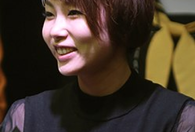
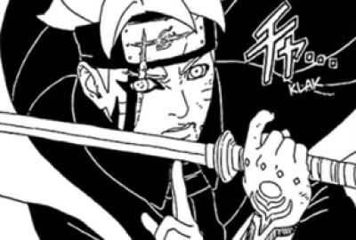

Baruto The Movie
Baruto Uzumaki adalah seorang karakter fiksi yang diciptakan oleh Mangaka Mashashi Kishimoto yang pertama kali muncul
|

Desain Awal Baruto
Baruto Uzumaki adalah seorang karakter fiksi yang diciptakan oleh Mangaka Mashashi Kishimoto yang pertama kali muncul
|

Peniru Suara Baruto
Baruto Uzumaki adalah seorang karakter fiksi yang diciptakan oleh Mangaka Mashashi Kishimoto yang pertama kali muncul
|